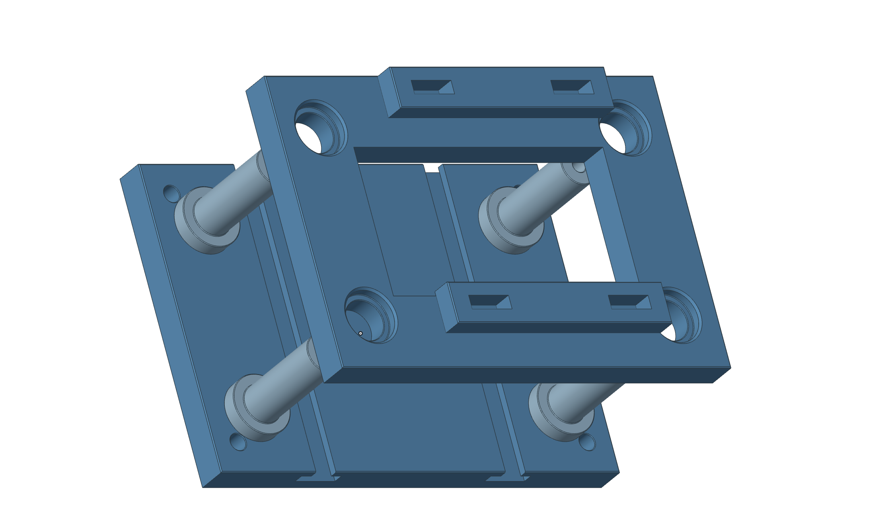

模具组件爆炸图
将模具部件分开排列，展示装配层次。

结构与观察重点
- 多层模板与导向组件
- 爆炸视图表达层级
- 安装孔与定位结构
模型规模与查看方式
本案例包含 8 个模型部件、172 个面。拖动旋转、滚轮缩放，支持复位视角与网格显示；触屏可双指缩放。
模型来源与适用范围
模型使用 GME 生成，并从原生几何数据导出网页显示网格。网页支持观察几何外形与装配关系，不在浏览器中运行内核建模运算。
本案例用于几何能力展示，不作为实物制造数据或性能基准。网格显示精细度与几何内核计算精度是不同概念；实际应用应结合输入尺度、容差和对应版本验证。
了解技术特点与验证方式